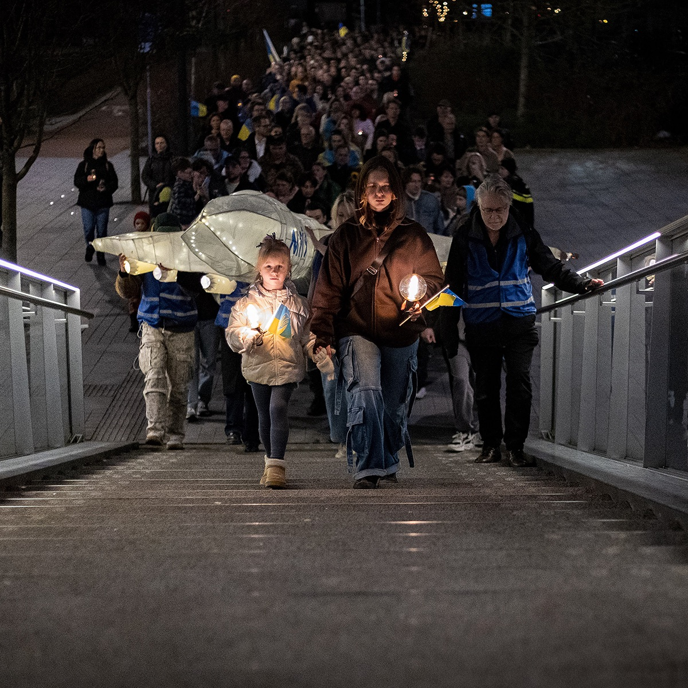
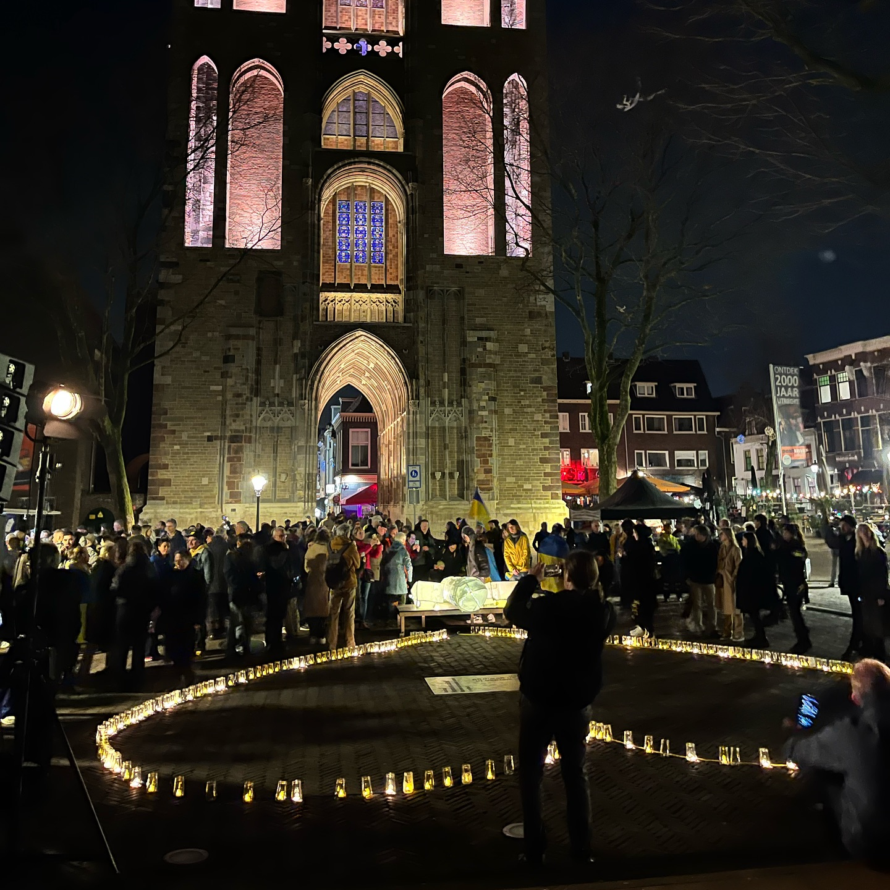
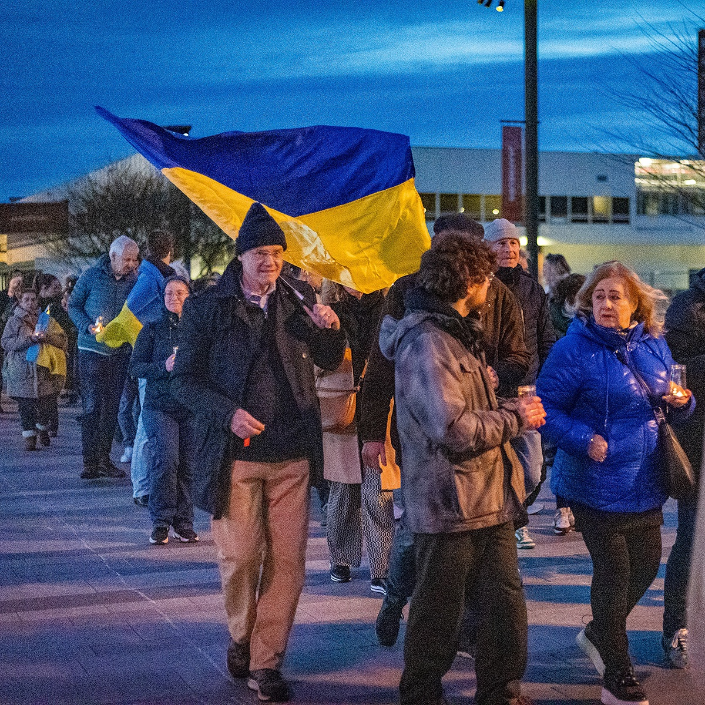
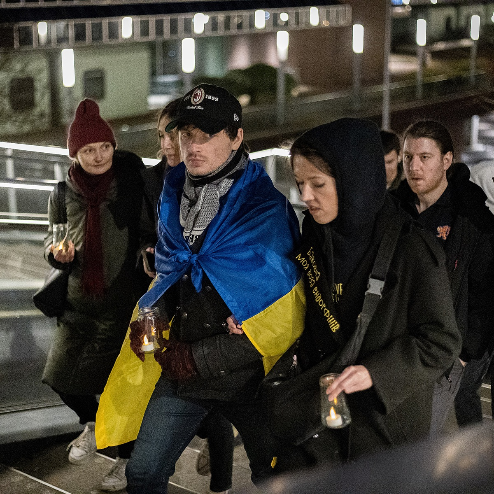
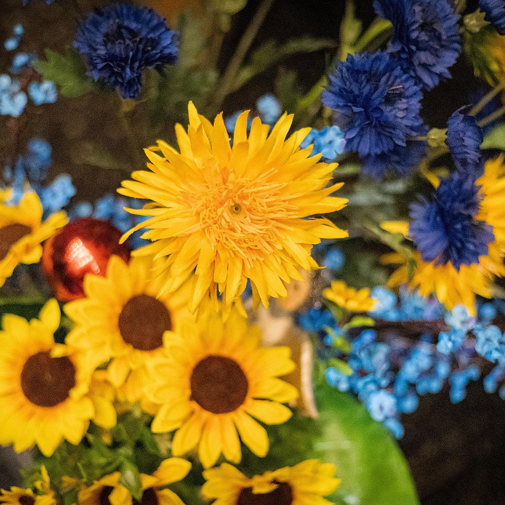

Terugblik / HerdenkenСпогади / Вшанування
Remember
Together
2025
Samen herdenken. Elkaar vasthouden.Пам’ятати разом. Підтримувати одне одного.

Hearts and Minds
for UkraineHearts and Minds
for Ukraine
Op 23 en 24 februari kwam de Oekraïense gemeenschap in Nederland samen om verdriet te delen, elkaar te steunen en kracht te vinden in verbondenheid.23 та 24 лютого українська спільнота в Нідерландах зібралася, щоб розділити горе, підтримати одне одного та знайти силу в єдності.
Remember Together 2025 bracht mensen in verschillende Nederlandse steden samen. De herdenkingen boden ruimte om stil te staan bij verdriet en om steun te vinden bij elkaar.Remember Together 2025 об’єднало людей у різних містах Нідерландів. Пам’ятні заходи дали змогу розділити скорботу та знайти підтримку одне в одного.
Tegelijk was er aandacht voor de Oekraïense cultuur, veerkracht en trots. In Utrecht maakten lichtjes en ontmoeting die verbondenheid zichtbaar.Водночас учасники вшановували українську культуру, стійкість і гідність. В Утрехті вогники та зустрічі стали видимим знаком цієї єдності.
Dank aan iedereen die deelnam aan de herdenking en aan iedereen die steun bood. Samen houden we de herinnering levend.Дякуємо всім, хто долучився до вшанування та підтримав його. Разом ми зберігаємо пам’ять.
Gebaseerd op de gezamenlijke Instagram-publicatie van Vital’nya en Radio Ukraine NL, 24 februari 2025. Onderdeel van Remember Together Alliance 2025.На основі спільного допису Вітальні та Radio Ukraine NL в Instagram від 24 лютого 2025 року. Частина Remember Together Alliance 2025.
In beeldenУ світлинах
Klik op een foto om deze te vergroten.Натисніть на світлину, щоб збільшити.








